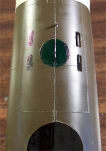
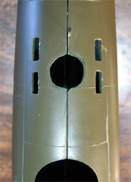
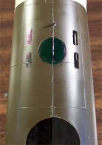
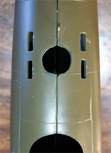
1/48 Revell B-17F to E Coastal Command Conversion
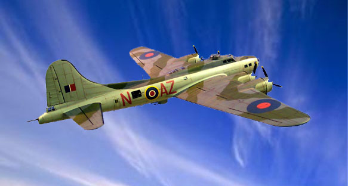
Images, text and model Copyright � 2003 by Matt Swan
I�ve pretty much covered the developmental history of both the �E� and the �F� models in the previous kit reviews so I'm going to get straight to the model. This project has been in the planning mode for quite some time now. It was more than a year ago when I saw an Academy 1/72 B-17E done in Coastal Command colors that I decided I wanted to do one in 1/48. First I had to acquire a suitable starting kit since there was no �E� model B-17 produced in 1/48. The Revell �F� was 90% of what I needed and I went to e-bay for that. Actually I acquired two kits, one nearly mint and one that had been started by a kid or novice modeler with a tube of Testors glue. I chose the started kit as my base for the conversion and proceeded to disassemble it and strip the brush painted layers off of it with Chameleon Paint Stripper.
I also need to think about my interior paint scheme. I am not relying on the Monogram directions but on the "Erection and Maintenance Manual" for the B-17F. It calls for Bronze Green in the "control cabins", which is the nose section containing the bombardier and navigator, the cockpit including the pilots and top gunner/engineer, and the radio room. Bronze Green is much darker than Interior Green, being matched to FS34050. You could use Euro I Green in the Testors line (FS34092) and add a few drops of black to it. Sometimes Dull Dark Green was used instead of Bronze Green.
The bomb bay is most likely aluminum lacquer. The rear section of the aircraft, including the waist gunner section, could be either Chromate Yellow or unpainted aluminum with Chromate Yellow stringers and bulkheads. Of course, one could see variations depending on the factory (Vega, Douglas, or Boeing), so it is possible that Interior Green was seen in some F models. Douglas did report usage of Interior Green on B-17Fs made in 1943, but this is assumed to be for the control cabins only. The general rule of thumb is overall Chromate Yellow for the rear part of the airplane, as ugly as it looks.
Turret interiors were Dull Dark Green, but sometimes you see flat black as well. The plywood floor was slightly varnished, but this did wear off quickly with use. It was not highly polished.
This is only a starting point, I still needed a Paragon conversion set and Paragon had already ceased production. I connected with another modeler in Florida who had several Paragon kits in storage and was kind enough to part with one. Things were moving ahead. I had to give some thought to final display and long term storage for the model. Most of my shelf space is already filled with single and twin engine aircraft and even if it were not, finding a piece of shelf large enough to handle a 1/48 B-17 is always a challenge. Considering that the interior of the Revell kit is already sparse I decided that this was going to be built in flight, gear up. This definitely took the burden of scratch building interior detail off my shoulders but replaced that with crew considerations. I figured I would need at least six crewmembers on board: pilot and copilot, both waist gunners, bombardier and tail gunner. These would be the visible figures. From what I understand if you are so lucky as to acquire a Pro-Modeler kit there are plenty of crewmembers included. This is not the case so I will have to get creative. I�ll get back to the crew in a little while.
Decals are another consideration. I have plenty of British markings in my spare decal stash but these are nearly all Spitfire or Hurricane related, not nearly large enough for the heavy bomber. While I do have a Lancaster in the stash I do not want to scavenge those decals. I searched Great Models web store, Squadron.com and Eagle Strike Productions looking for appropriate decals. Items of concern where obviously getting roundels of the correct size but also a Scottish Coastal Command emblem. Not an easy combination to acquire. Another question that has yet to be answered is whether or not the roundel appears on the bottom side of the wing. I know that bombers operating over the main continent do not carry these markings but that home defense aircraft do. This aircraft fits into the home defense category so it may carry them but I have not been able to verify it yet.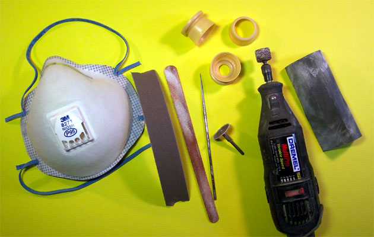 That search continues. I finally settled on a set from Aero Master, Lancaster Bombers Part 2, to provide my primary markings. I found a rough, black and white image of the Scottish Coastal Command unit on-line that I�ve sent off to Mike Grant Designs for a quote.
Although I do not have 100% of my materials gathered I feel that I have enough on hand and enough in progress to start the kit. I�m really anxious to play with those Paragon parts so that is where I�ll start. The engine cowlings have a large casting block right on the nose. I used my Dremel with a cut-off wheel to take off the majority of the material then shifted to a sanding barrel to get down to the basic shape. From there an emery board followed by a round diamond file and a few successively finer grades of sandpaper finished off the cowlings.
Resin dust is toxic so it is important to wear the proper personal protective equipment (PPE) while sanding and sawing this stuff. Pictured is the respirator that I�m using. I said �respirator� not �mask�. A dust mask has a single elastic band to secure it to your face while a respirator has two. This ensures that the equipment is secure to your face and toxic particles are not slipping around the edges and making their way into your lungs � a very important feature!
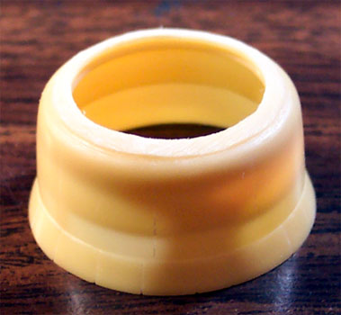
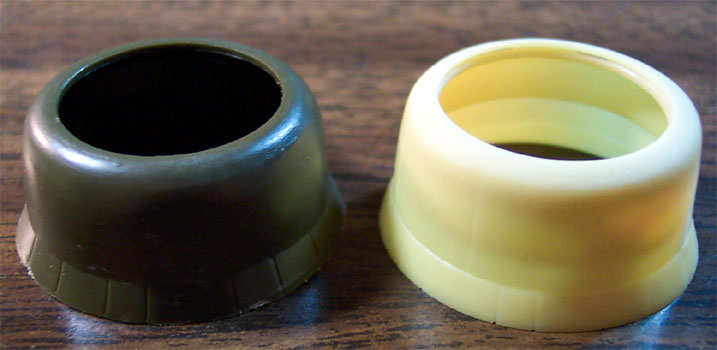
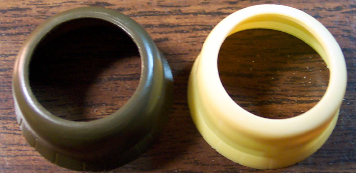
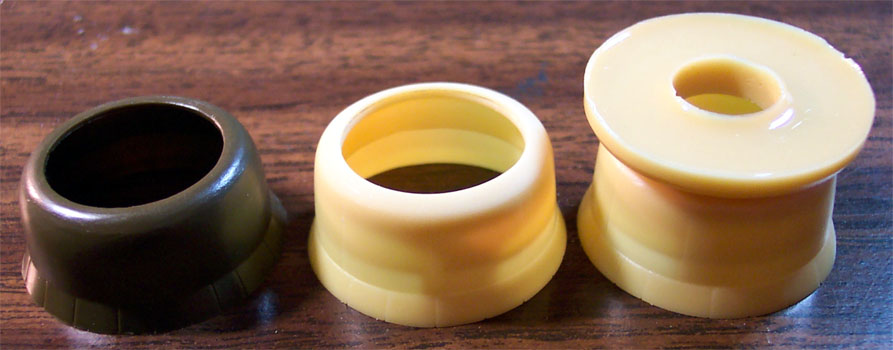
Click on the pictures above for larger images
These are in progress pictures of the Paragon cowlings and comparisons to the kit "F" cowlings.
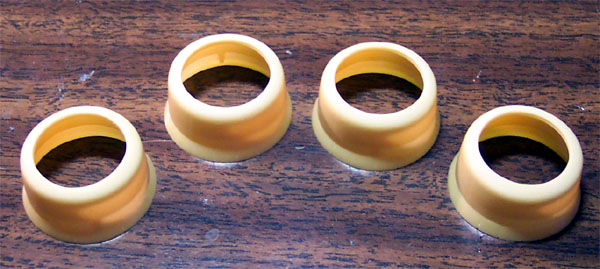
Now that I have satisfied (for the moment) the urge to play with Paragon pieces maybe I can do some work on the kit parts. The conversion directions call for installing the kit clear parts in both sides of the nose then masking over them to create a third standard size window. This does not look to be a good idea as the large window has a very pronounce rivet pattern around it plus the window has a big freaking hole in it for a Browning machine gun. I think that I will try a different approach. First, using a Xacto Leaf blade I carefully trim off the rivet pattern. Next I cut pieces of Evergreen stock sheet to fit the window openings and secure it with Tenex 7R. I putty the inside to bring it to the same level as the rest of the fuselage and some putty on the outside to cover any seams.
After my putty has dried overnight I sand both sides smooth. When I applied my putty I used a Q-tip and acetone based fingernail polish to smooth it out so the amount of sanding is minimal and there has been virtually no damage to the raised panel lines. Now I will lay down some strips of masking tape to outline the dimensions of the new window. I use an archival pen to trace the window edges then remove the tape. Next I use a small burr bit in my Dremel to open up the window center. Once that is done I trim it close to the pen line with a razor knife then shift to a small flat diamond file to finish it off. This is done to both sides.
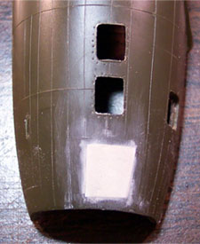
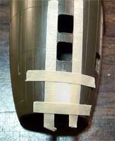
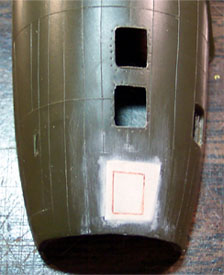
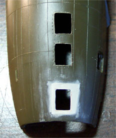
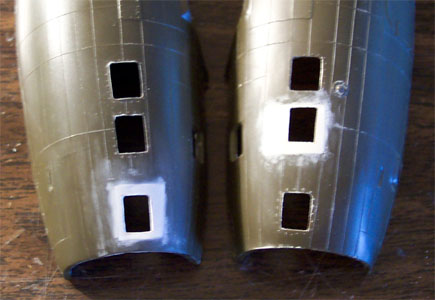
There is yet one more modification that has to be made to the fuselage. I will be modeling an aircraft manufactured prior to the introduction of the Sperry Ball turret. I will be installing a remotely controlled turret and will need to install the sighting windows for the turret operator. There are four small rectangular windows and a single dome window that must be placed in the lower fuselage behind the belly turret position. The belly gunner�s position is very close to the waist gunners� positions, which must have made this an extremely crowded area.
I�m starting with the right side fuselage and place my rectangular windows per the Paragon instructions. I used strips of tape to outline them and followed the same procedure as with the nose windows. Once the right side windows were complete I taped the fuselage halves together and used more strips of tape to place the left side windows. I also traced a 10mm circle on the belly with a scribe in a compass for the dome window. I colored this area with a marker to aid in cutting it out. The left side windows were cut out then I used a cylindrical cutting burr to cut out the dome window then used some sandpaper to clean it up.
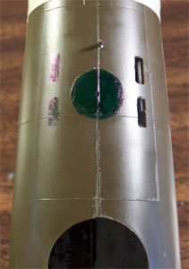
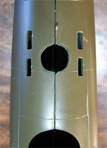
As I said before, this has been in the planning stages for some time. I knew right from the beginning that I wanted to build this �in flight� with gear up and now I must consider the changes that will be needed to accomplish this. The gear bays are devoid of detail, which for my purposes is a good thing, less stuff to get in the way. First thing I need to do is to get rid of the retraction arm on the front of the gear strut. This would normally fold up and just a small part would be visible from beneath the aircraft.
 Folding the strut and laying it in the bay would consume too much room however putting a piece of Evergreen rod in the bay for just the visible portion works okay. With the retraction arm removed I�ve placed the assembled wheel on the axel and test fit it into the bay. Guess what, it does not fit. I have to open up the hole in the interior bulkhead and trim the end of the axle to get it to fit into the bay properly. The exterior opening needed a little sanding to allow the tire to slide into position and I think it looks pretty good. The second bay is treated in the same manner and now I can glue the bay bulkhead in place and paint the interior Model Master Green Drab. I know that a lot of B-17 instructions tell you to paint the interior chromate green but the truth of the matter is that they were painted a variety of colors. Some were chromate green, some were O.D. while others were dark olive, natural metal and in one case black with messages written in white chalk from the production crew to the ultimate flight crew. The bottom line was that the lack of the correct shade of paint was not going to slow down bomber production by one second.
Folding the strut and laying it in the bay would consume too much room however putting a piece of Evergreen rod in the bay for just the visible portion works okay. With the retraction arm removed I�ve placed the assembled wheel on the axel and test fit it into the bay. Guess what, it does not fit. I have to open up the hole in the interior bulkhead and trim the end of the axle to get it to fit into the bay properly. The exterior opening needed a little sanding to allow the tire to slide into position and I think it looks pretty good. The second bay is treated in the same manner and now I can glue the bay bulkhead in place and paint the interior Model Master Green Drab. I know that a lot of B-17 instructions tell you to paint the interior chromate green but the truth of the matter is that they were painted a variety of colors. Some were chromate green, some were O.D. while others were dark olive, natural metal and in one case black with messages written in white chalk from the production crew to the ultimate flight crew. The bottom line was that the lack of the correct shade of paint was not going to slow down bomber production by one second.
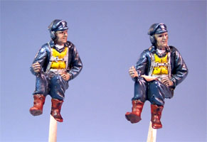
Moving back to the fuselage, once again I have to consider �in flight� options. Let�s take a look at that crew I mentioned earlier. The kit does not include any crew so it�s scavenge time! I have an old Monogram B-24J junker kit that I got as an add-on to another deal and the seated pilot figure is still inside the assembled fuselage as well as one standing figure � rip that thing apart and salvage those two. I have a B-24D kit in the stash and steal the seated pilot from that one. Now I have the pilot and copilot covered. Both figures needed to have their butts shaved down a little with my trusty Dremel and the bottoms of the boots had to be trimmed along with just a little off the back to sit correctly. For the copilot I used a very small cutting burr and removed the clipboard from his lap and rebuild his leg structure to give them a little variety. They get mounted on toothpicks and painted for the job.
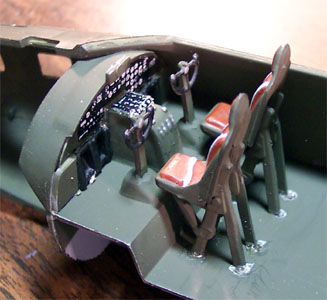
The interior of the fuselage gets a few coats of Green Drab also. The cockpit assembly was completed per the instructions with the exception of the dash. I found a spare B-17 dash decal in the spares bag (can you believe my luck?) and put that on the dash. I glued the cockpit assembly in place on the right fuselage half and then test fit the cabin roof with a pilot in place � nope, not happening. The seats sit up way too high with the top of the headrest nearly on the cabin roof and the pilots cap will not let the roof settle into place. I check some in flight photos of real aircraft looking at pilots head position and seat backs and my opinion is confirmed. I now cut out the seat assemblies, cut about 1/16 of an inch off each seat leg and reinstall them. Now the pilots head sits in the correct position.
That's two covered, four more to go. The next four are going to be more difficult as they cannot stand upright nor be in a sitting position. I have to look for some figures that I can cut up and reassemble into various crouched positions. The tail gunner will be easy because I just need a bust for him. I would like to have a least one waist gunner peering out the window and the other moving about inside but still visible. I think I want the bombardier moving forward into the nose position. Definitely have some work ahead of me.
Hold everything, change in plans. While I was searching for adequate figures to slice up I got an email from modeling comrade Derwin who has 90% of a Pro-Modeler B-17 crew set that he is not going to use. Well, I wasted no time in letting him know I wanted those figures and he is mailing them to me so while I wait for the arrival of the crew I will work on some other aspects of the kit. I think I heard a collective sigh of relief from the spare figures box.
As I said before, this kit had been started by someone way back when and while they had only done stuff to the fuselage as far as paint and glue the wings had been removed from the sprue and when placed back in the box took some warpage. I spent about an hour slowly stressing and gluing the wing halves together to take the warp out of them and another hour after the glue (Tenex 7R) had dried cleaning up the seam line on the leading edge. The fit at the engine nacelles is not very good and there was a lot of carving and filling done around those points. I still have to fill the exterior bomb rack mounting holes as those were not present on the �E� model.
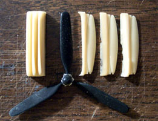
I feel that it�s time to play with some resin again and I�m taking a look at the propellers. The conversion directions call for the �F� model paddle blades to be cut off the hubs and for the �E� model blades to be mounted in their place. With four propellers to do and considering how fragile a prop is once the blade has been removed and reglued I have some concerns about this. I wonder if I would not be better off to simply try to sand down the kit blades. I take out a set of the Paragon blades and look them over, it�s difficult to compare them on the casting block so I slice one set of three apart for examination. Look at the picture to the left and you can see what I�m talking about. On the far left is the original cast of three blades from Paragon, central is the kit propeller and on the right are the individual blades. They look to be very nice castings so I will go to the trouble of removing them from the block and replacing them.
Off I go to the basement where I have good fan ventilation and can make a lot of resin dust. Haul out the dust respirator and the Dremel and I�m ready to get busy. I�m using the cut-off wheel to remove the majority of the casting block from each blade leaving just a fine line of excess on each one. Once this has been done to the first set of three I shift to a piece of 400 grit automotive emery cloth and sand the excess material down until there is just the finest line left. Now I change to a flat diamond file and finish the removal. From here I use some very fine (800) sanding paper to polish the blade. One set of blades equals about one hour of modeling time but the end result is three very nice looking blades. Still have to cut the kit blades off and drill the hubs for reattachment.
On the next set I change over from the cut-off wheel to a sanding drum and this speeds up the process quite a bit. Now I am down to about a half an hour per blade set. I still have to get these new blades on the old hubs. To achieve this and maintain proper blade alignment for four sets I need a jig. I�m using a block of modeling clay formed into a solid square, which I�ve gently pressed a propeller into until the lower edges of the blades make contact with the clay. The clay has pressed up into the shaft-mounting hole giving me a good alignment point. Now I take some small pieces of clay and roll them between my fingers to warm it and make it more pliable. This is gently worked under the blades with my dental pick to form angled wedges that will hold the alignment for the new blades. I also work a little clay up around the hub itself so that I can align it when there are no blades on it.
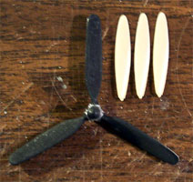 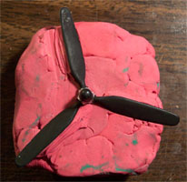 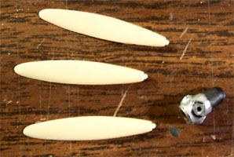
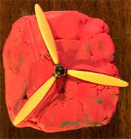
Whenever I am not actually assembling a propeller I will keep an old kit propeller in the jig so the clay cannot take damage accidentally. Now I remove the first set of old blades using a set of Xeron Sprue cutters with the flat side to the hub. Each paddle blade is cut off and stored in the spare parts box. It never hurts to have an extra dozen Hamilton Standard paddle blades. The hub surface is carefully trimmed with an Xacto blade and then I create a dimple in the center of each attachment area with the tip of an Xacto leaf blade. Note on the replacement blades that there is a small node that will be inserted into the old hub. I then drill out the dimple with my Welders Tip Drill.
The stand-by propeller is removed from the jig and the drilled hub is inserted. The lump of clay that aligns the hub is really useful now. I drop a good glob of medium super-glue onto a post-it note and dip the node of the new propeller blade into it and put the blade into position, gently pressing it onto the alignment wedge with my fingertip. I don�t want to apply so much pressure as to change the shape of the clay but I do want the blade to lie flat on the wedge. All three blades are placed in the same manner and a little accelerator is applied using a paintbrush.
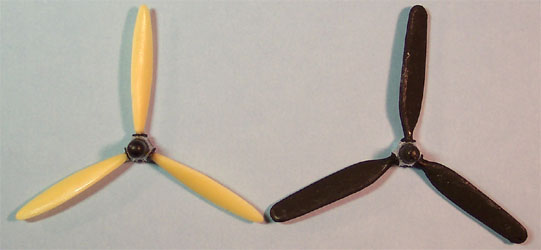
The propeller is removed from the jig, the stand-by propeller is placed back into the jig and one assembly is now complete. The other three are done in the same fashion and set aside to allow the super-glue to fully cure.
I�m moving back to the wing assemblies now. As I fill the exterior bomb rack mounting holes I regret that I did not glue some scrap sheet stock over the insides of the holes. The putty wants to press right through to the inside and there is not a lot of structure for it to bond to. While the first coat of putty is drying I start working on the engines. Each engine face is trimmed up and mounted on a toothpick for painting. A little masking tape is wrapped around the ends of the toothpicks to ensure a secure fit into the engine face.
The engines are airbrushed with Model Master Steel then the crankshaft bodies and outside edges are done with Gunze-Sangyo Burnt Iron. The front gear housing is painted dark gray and individual details are picked out the flat red, brass and black enamels. Once the paint has dried the entire assembly is washed with a black sludge wash. The insides of the cowlings are painted Model Master Drab Green on the front half and flat black on the back half. The engine faces are a little snug fitting into place so I sand the outside edge of each facing a little to smooth out the fit. Each facing is secured with drops of medium superglue placed on the backside.
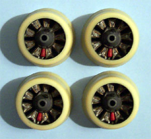
Back to the wings. The face of each nacelle where and engine will be mounted is painted flat black. The engine mounting stubs are trimmed up and the engine faces were test fit before being inserted into the cowlings. A second coat of putty is applied to the exterior bomb rack mounting holes and this goes back to the drying shelf.
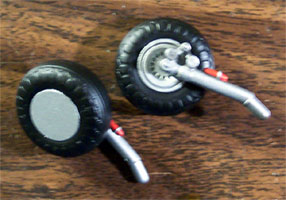
Let�s take a look at some landing gear for a few minutes. I�ve already cut off the retraction arms and cleaned up those connection points and the seams on the tires have been sanded down. The tires are airbrushed flat black and the struts are done in flat aluminum. Once the black has dried I mask the tires off with regular masking tape, cut out the center sections with an Xacto and airbrush the hubs flat aluminum. There is an odd tank on the gear strut, I don�t know what it�s supposed to be but what the heck, let�s paint it red. The wheels are glued to the struts and everything gets sludge washed and these get set aside. There are lots of subassemblies starting to accumulate now. I think it's time to go back to the wing/engine assembly again.
Each shaft stub gets trimmed and sanded so it will spin freely then the first engine/cowling assembly is test fit. It doesn�t fit. The flap area on the resin cowling is too thick to fit over the nacelle fairing. I use my Dremel with the sanding drum in place to grind a 45 degree angle around the perimeter of the nacelle and test fit the cowling again, much better
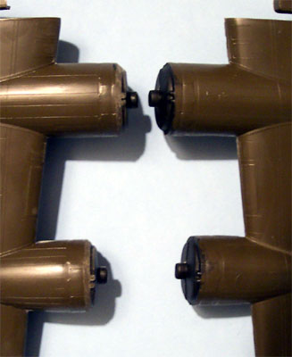
While test fitting the cowlings I check the fit of each propeller shaft also. The outboard shafts fit wonderfully but the inboard shafts on each wing feel sloppy and I think this will allow the propeller to droop when complete so for these two positions a .01 piece of sheet styrene is glued to the front of each mounting stub to tighten the fit. A heavy bead of medium super-glue is laid around the beveled edge of the nacelle and around the lower area of the engine-face mounting stub. Care is taken to not get any glue where the propeller shaft will ride. There is a little slop in the cowling fit as far as rotation is concerned which is good because as I look at the cowling from the front it needs to be twisted a little to line the engine up correctly. The cowling assembly is held in place and a drop of accelerator is placed into the cowl flaps and allowed to run down the glue bead.
Each engine assembly is now packed with tissue paper and the wings get a coat of Model Master gray primer. A few spots show up around the sides of the cowlings that will need a little more sanding but overall they look pretty good. When I built the �Impatient Virgin� from the Monogram B-24J kit I had a similar problem in the exact same area.
The crew figures have arrived from Derwin and he did me real nice. He sent me four of the original Pro-Modelers figures and a couple other various seated pilots. I�m using both of the waist gunner figures, the standing gunner is fine as designed but the crouched gunner needs a little adjustment. I want this guy looking out the waist window rather than holding a gun so one arm is raised, the gloved hand is cut off and repositioned. I�m using another standing figure from the B-24J kit for the navigator. This one is too tall but I can cut off his feet and it will not matter for the interior placement I have in mind. All the crew are done with Flat Sea Blue with details done in flat yellow, light gray, silver, black, dark gray, and olive drab. After the basic paint job is finished they are washed with a black wash then dry brushed with a medium flat blue then dull coated with Polly Scale clear flat.
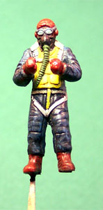
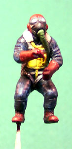
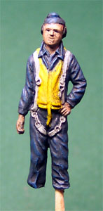
To get the waist gunner positioned properly I hold the crouched crewmember in place and mark the inside of the fuselage with a pen where their feet make contact then hit each mark with a burr bit in the Dremel to make a slight notch. The standing gunner will be manning a browning but I do not want to install the guns until the final stages of assembly. I take one browning assembly and secure it in place with a thin strip of masking tape then position the crewmember and make mounting notches for him in the same manner as the other gunner. Now the browning can be removed for later installation.
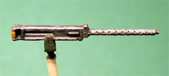
The Paragon kit includes replacement gun barrels for all the gun positions and it�s time to start looking at these. Starting with the top turret I cut off each gun barrel flush with the gun housing. Using my Welder�s Tip Drill the gun housing gets a shallow mounting hole drilled and the resin gun barrel is sanded lightly to slide into the hole. With a little superglue the barrel is installed and aligned. The same procedure is followed on the Brownings for the waist positions. The guns are painted with Gunze-Sangyo Burnt Iron, given a black wash and dry brushed with Model Master Steel before getting the Polly Scale dull coat.
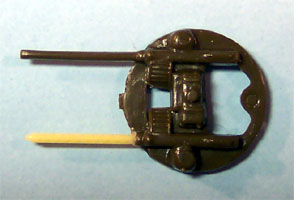 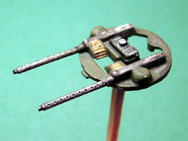 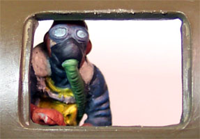
The crouching gunner is superglued into position and the Browning on the opposite side is taped in place again to position that gunner. He gets his feet superglued down also. The Navigator is placed in the nose compartment and the fuselage sides are test fit. Everything is looking good. I set that aside for a few minutes and put a final coat of Future on the propellers. The Hamilton Standard logos were put on the other day and set with Micro-Sol. Those are Mike Grant logos by the way. I also put a coat of Polly Scale clear flat on the hubs. Two of the hubs are done in dark green and two are done in dark sea gray. Now I�m back to the fuselage. I wanted it to set aside for a few so I could come back to it and look once again to see if I was missing anything before gluing it together. All the clear parts that needed to be installed from the interior have been placed and I will put Fast Frames masks on them after the fuselage is together. The tail wheel will be installed later in the retracted position. Earlier when I had test fit the wings I found that the front �L� peg interfered with the cockpit bulkhead and had to be cut down about a quarter inch for the wings to lock into place properly. Everything still looks good so I begin the glue process at the underside of the tail and work my way around with Tenex 7R a couple inches at a time making sure everything is straight, aligned and tight.
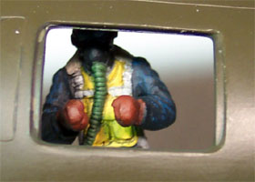 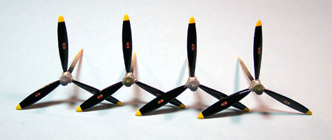
After the fuselage had a few hours to set up I went over the seam with a razor knife to clean off any large pieces of plastic that may have bubbled up from the glue. There was very little need of putty along the seam. One spot behind the cockpit needed a little and there were two or three spots along the belly that needed just a dab. Anywhere that putty was applied I used a Q-Tip dipped in acetone based fingernail polish remover to smooth out the putty and to remove it from any raised detail. This will greatly reduce the sanding required and save the most detail possible. The seams were sanded with progressively finer sandpaper until they looked good under a close inspection.
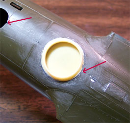
The next item to install is the remotely operated belly turret. This is a two-piece Paragon resin assembly and I am installing the upper cup. The edges of the cup are sculpted to meet the contours of the kit fuselage but are not correct and the fit into the fuselage is very loose. Either there will be a large recess to the front and back or a raised area to the left and right. I chose to lift the part so the front and back edges met the kit part and then will grind off the raised area. I painted the interior area of the cup Green Drab then placed a small drop of superglue to the back edge of the resin part and tacked it in place. Once it was positioned properly I placed a few more small spots of glue to secure it in place then worked around the edge with a heavier bead of superglue. This was hit immediately with accelerator. I used my Dremel with a small tear-dropped stone to grind off the excess superglue and resin until the parts edge is nearly flush with the plastic. I shifted to a diamond needle file to finish to basic material removal then cleaned it up with fine sandpaper. There are still a few small spots that need some putty and then it will be ready for primer.
The top turret guns are installed into the glazing and I place Fast Frames masking material on the glazing. The interior areas are covered with Grumbacher Liquid Frisket material. The turret is installed into the cockpit roof, the clear piece that comprises the cabin windows is glued in using Testors Clear Parts Cement and the entire assembly is installed onto the fuselage. A wee bit of putty is applied at the seams and smoothed out with acetone. The Fuselage seams are brush painted with some primer gray and so are the outside areas of the new nose window frames to seal the putty that was placed there early on in the build. All the remaining clear parts have been Futured and allowed to cure for 24 hours and now are installed. The previous modeler destroyed the clear part for the side door so that needs to be reconstructed. Both new nose windows need to be fashioned and the waist gun window areas need to be masked off. All the kit windows are covered with the Fast Frames masks.
I am using the clear plastic packaging material from a package of Xacto blades to construct my new windows. It�s a simple matter of cutting out some rectangular pieces and trimming them to fit the openings, dipping them in Future and allowing them to cure. I place a bead of Clear Parts Cement around the interior edge of the window opening and use a thin strip of masking tape placed across the new windows to hold them in position. The Paragon replacement nose cone has been trimmed up, Futured and masked with strips of masking tape and liquid frisket and is glued in place with the Clear Parts Cement. A single strip of masking tape is used to help hold it in position until the glue sets up. After the glue has dried I place another bead around the seam on the nose to blend in a slight step from the fuselage.
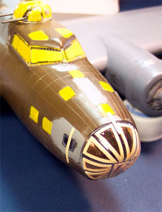
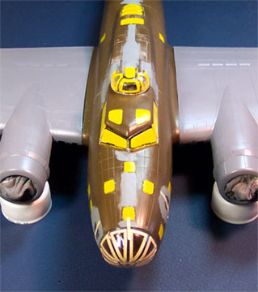
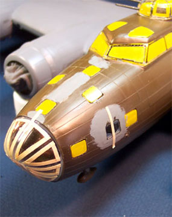
The wings are not glued in place but simply held in place by the plastic lock tabs. They will be glued shortly.
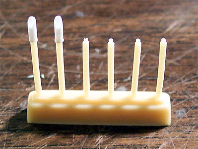
The kit tail-gun is just plain lame, there is no other way to describe it. Ground-crews had dressed up this gun to look as formidable as possible to scare off attacking aircraft but the kit gun would not scare of a Cessna. Fortunately Paragon as provided plenty of replacement .50 caliber barrels in the conversion kit. I needed to find some way to recreate the large flash suppressors that the real guns displayed. I used a piece of 1/16 inch (1.6mm) Evergreen rod and drilled it out with my Welders Tip Drill to make hollow tubing then sliced it off the end at an angle. Two of these were super-glued to the resin barrels then the barrels replaced the kit pieces and I now have a very formidable looking set of Brownings to place on the aft end of this bomber. The tail gun assembly will be installed after the model has been painted.
I�ve pulled the wings back off and touched up a few more areas along the leading edge with some sandpaper and fit them to the fuselage again. The Starboard wing fits fairly well but the Port wing has a large gap at the back end and bulges out along the bottom seam. I run a few drops of Tenex 7R into the Starboard top seam and hold the wing in place while it sets up. After a few minutes the model is set down with some bottles of paint laid onto it in crucial areas to hold the wing position and given a few hours to fully cure then the lower seam is glued. The Port wing is done in the same manner until I get to the lower seam where I apply some small bar clamps to hold the wing in place and flex the plastic into the correct shape while the glue sets up completely.
A day has passed and I am cleaning up the seams at the wing roots now. First any excess plastic that has been pressed up from the glue is trimmed with a leaf blade in a #2 Xacto handle. Next, the seam gets puttied. This process is the same as I have described in the Seam Repair instructional. I�m using the �Fencing� technique to lay a very small bead of Squadron White Putty into the seam then smoothing it out with some acetone based fingernail polish remover. I do this in a four-step process; Starboard wing top, Starboard bottom, Port top, Port bottom. After it has had a few hours to dry the seams are finished with some fine sandpaper. The picture below right is after the acetone treatment but before sanding. As you can see there is not a whole lot of sanding necessary to finish that seam.
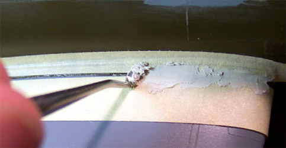 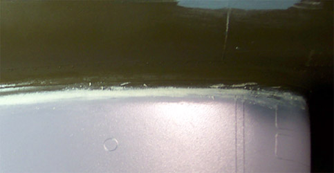
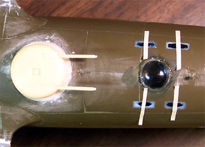
The belly gun sighting blister has been installed and I cut four small rectangles of clear plastic for the offset sighting windows. These are all installed with Testors clear parts cement and held in place with strips of masking tape until the have dried. After the tape was removed the small windows were brushed with Future. The larger bubble was dipped in Future before installation.
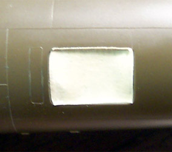
After the Future coating had cured for 12 hours I masked off the small windows and wrapped a strip of tape around the upper edge of the blister. The rest of the blister was masked with liquid frisket material. The waist gun windows had masking tape laid overtop them and burnished into the edges with a toothpick then trimmed with a fresh razor knife. The tail wheel bay had some tissue paper stuffed into it and the only opening not masked or filled is the window in the rear crew door. The plastic piece for this had been trashed by the previous owner of the kit and I will replace it with some new clear plastic but because of the thin wall around this window I think it will be best to do this last.
Things are really going to start moving now. I�ve taken a strip of masking tape and rolled it into a small tube to slide over the top turret gun barrels to protect them from the paint. First the entire model is coated with Model Master gray primer. I go over the model looking for defects and find a few around the engine nacelles, which are quickly filled and sanded. Next all the deicing boots get coated with Testors flat black. After they have dried for a few hours I mask them off with thin strips of tape and then shoot the upper surfaces with Polly Scale dark green acrylic. This gets a few hours to set up then the camouflage pattern is masked. This is done with wide masking tape that I�ve put a squiggle cut down the center. Once the masking is complete I shoot it with Polly Scale dark sea gray and remove the camo masks leaving the deicing boot masks in place and the clear parts masks in place.
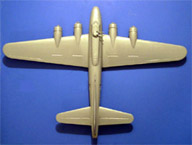
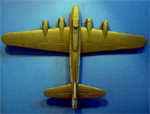
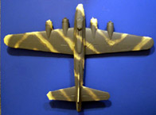
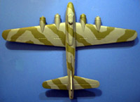
Click on any of the above pictures for larger images.
This has been a fairly intensive painting session and now I need to let these layers of paint cure for a day before continuing. Next I�ll be masking off the upper pattern and shooting the light gray underside. There are a few minor areas that will need touching up with a brush and then the final pieces will be added to the model.
Now I have some more serious masking to deal with. I�m using a very basic, generic type of masking tape that I buy in bulk from my local automotive paint store � this is Highland tape part #2727 and is a medium tack tape. For each of the engine cowlings I use a quarter as my former and cut out a circle of tape to center on the cowling. Then I use thin strips of tape to cover all of the edge lines. The wings and stabilizers are covered with tissue paper and any other exposed area is covered with more tape. The entire underside, the fuselage sides and the rudder and fin are shot with Polly Scale light gray. The dark green and dark sea gray were both Polly Scale also and gave me no trouble painting but the light gray is very difficult. It wants to clump up and clog the airbrush repeatedly. I thin it out to about 50% with Windex and add several drops of flow aid and this solves the problem.
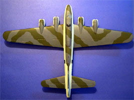
With the paint thinned out to this degree I have to apply several light coats to get good color density allowing about a half an hour between coats. Once this has been completed I remove all the large masks and the deicer boot masks as well as the masks over the waist gun positions. The masks on the clear parts stay in place but the tissue packing from the engines and landing gear are removed at this time also. The light gray did crawl under the masks in a few placed but this is touched up with a wide soft brush and I am ready to move on to the main gear.
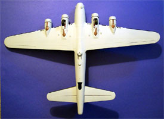
A good sized drop of medium super-glue is placed on the end of the landing gear leg and another is placed on the contact side of the axel where it will connect onto the bay bulkhead and then the gear is put in place. I�ve cut short pieces of Evergreen rod, painted them steel and now super-glue them in place as the visible part of the retraction arm. The superchargers are painted with Polly Scale rust, washed with a black sludge wash then dry brushed with Gunze-Sangyo Burnt Iron to give them a metallic sheen.
In each wing leading edge there is a small bay for a landing light and there is a large gap inside each bay that I�ve filled with Squadron White putty. This gets trimmed up with a razor knife and some sandpaper before getting a coat of Testors silver paint. The light itself will be made from some scrap plastic and the lenses will be installed after the final dull coat has been applied.
The tail wheel has been super-glued in place and the strut brace has been trimmed for a folded position and installed in the tail wheel bay also. The canvas cover around the tail gun position has been done in a rust color to simulate leather. I�ve gone over the entire model looking for defects in paint or surface that need touch-up and feel it is fairly complete. The model is given overnight for all paint to cure and then she gets a good coat of Future.
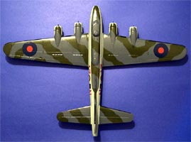
Once again there is an overnight drying period and I can begin to apply decals. One thing I can say about those old Revell decals is that they give you lots of little stencils. I�m using those from the kit sheet as well as a few from an old Aero Master B-17 sheet and the national markings are coming from Aero Master, Lancaster Bombers Part 2. The national markings are put down first and then the other decals will be applied after those have dried. The markings on the fuselage are actually three decals layered and I like to give each layer a day to dry before putting another on it so I have three days tied up decaling.
Before each decal is placed I use a soft brush to dampen the area with some Micro-Set solution. After each decal has been in place for about five minutes I come back with the soft brush and Micro-Sol to treat the decal. The old Revell decals are pretty brittle and the edges want to curl up as they dry until the Micro-Sol hits them and then they settle down nicely. The large Aero Master roundels on the wings gave me a bit of trouble also. They are single layer decals but do not want to conform to the wing surface. I had to hit them three times with Micro-Sol to get a good result. The other Aero Master decals behaved just fine.
She�s starting to look really nice, I can hardly wait for the masks to come off.
The weathering process has begun and I'm experimenting with different methods of accenting raised panel lines. I tried some standard sludge wash but that did not take very well. I tried some work with a sanding stick to abrade off the top layers of paint and expose the darker plastic underneath but that was a lot of work and I didn't really like the results. Next I tried a .005 Micron archival pen to trace the raised lines but that created a very stark look that I didn't like either. Then I went back to the sludge wash idea and tweaked it with some Higgins brown ink and Liquitex flow aid and ended up with a result that I could live with. I probably should have gone for a different color ink as this one went a little red on me and that was even after I added some Grumbacher Black and Sienna to it.
The wash mixture that I�m using is mixed in a soda pop bottle top and consists of a small dab of Grumbacher Black + a small dab of Grumbacher Sienna + a few drops of Higgins dark brown water soluble ink + a few drops of Liquitex flow aid + a single drop of liquid dish soap and lots of water. I brush the mixture onto the raised panel line and let it dry then, using a good quality paper towel cut into about four inch sections and folded into tight pads and dampened ever so slightly, I wipe the model surface from front to back. This take a little practice to get just right as some area need just a light touch while others actually need some scrubbing to get the ink level just right. The fueling caps were streaked by placing a drop of wash on the cap, letting it dry then slightly dampening my fingertip, placing it firmly on the spot and giving it a quick wipe to the rear.
Now I shall work on some exhaust staining. First point if interest is the vents on the upper surface of the wing. Many times modelers will show heavy staining around these vents but they are vents not exhaust ports. They vent hot air from the oil coolers and intercoolers.
 With this in mind I keep a very light residue track from these (we are talking oil here) and make heavier tracks on the bottom of the wings. The staining is done with Tamiya X-19 smoke thinned 20% with Liquitex flow aid added. My air pressure is set at about 7 psi and I am making several light passes to build up some color. This is only the base layer of the stain. Once this layer has dried the entire model gets shot with Polly Scale clear flat then the pastel chalks come out.
With this in mind I keep a very light residue track from these (we are talking oil here) and make heavier tracks on the bottom of the wings. The staining is done with Tamiya X-19 smoke thinned 20% with Liquitex flow aid added. My air pressure is set at about 7 psi and I am making several light passes to build up some color. This is only the base layer of the stain. Once this layer has dried the entire model gets shot with Polly Scale clear flat then the pastel chalks come out.
I�m using a combination of brown and light gray pastel chalk. I use my razor knife to shave it into a pop bottle cap and mix about 70% brown and 30% gray. Using a cotton swab I wipe the ground chalk onto the model creating the final stains. Just like with the airbrush, repeated passes increase the color density. Using a short brush I dry dab some steel onto leading edge surfaces for some light paint chipping. Once this is complete I cut a small piece of clear plastic from a battery bubble pack for the rear crew door window and install that. The aerial is made from some invisible thread drawn across the tip of a black marker and secured with some super-glue.
The final pieces are added now; the waist guns are positioned with small dabs of super-glue and the tail gun is mounted. The propellers are all placed with some Tenex 7R and now the masks come off. I used Fast Frames masks and will never use them again. These things are very difficult to get off and, at first, I thought they were leaving behind all their glue but it turned out they were ripping off the Future coating. I had to go back over every clear part that had a Fast Frames mask on it and re-Future it. All areas that were masked with liquid frisket and masking tape came clean without a problem. From now on it�s Black Magic masks for me.
Project completed 12/24/03


{kind=link}
{kind=link}
{kind=link}
{kind=link}
{kind=link}
{kind=link}
{kind=link}
{kind=link}
{kind=link}
{kind=link}
{kind=link}
{kind=link}
{kind=link}
{kind=link}
{kind=link}
{kind=link}